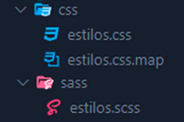

Antes de que puedas empezar a usar Sass, necesitas instalarlo. En este enlace puedes aprender a instalar Sass si todavía no sabes como hacerlo.
Como puedes ver a continuación, son pocos los conceptos (en total ocho) que tendrás que aprender para saber utilizar Sass. Si ya sabes CSS no tendrás ningún problema a la hora de aprender la mayoría de estos conceptos.
Los tres últimos (Mixins, Extend/Inheritance y los Operadores) puede que te cuesten un poco más. Si ya sabes Javascript o algún otro lenguaje de programación, te será también más sencillo entender como funcionan las variables y las funciones.
No te preocupes si al principio no eres capaz de entenderlo todo, empieza por lo sencillo y sigue practicando hasta que tus archivos CSS esten lo mas legibles posible.
Sass es un preprocesador que se utiliza porque las hojas de estilo CSS por sí solas pueden llegar a ser muy grandes y complejas, lo que hace que sean más difíciles de mantener. Sass tiene algunas características que aún no existen en CSS como pueden ser la anidación, los mixins o la herencia entre otros. Sass permite escribir un CSS más robusto y mantenible.
El código Sass que escribas se guardará también como archivo .css junto a otro archivo con extension css.map que se necesita para poder procesar bien el código Sass. Al final tendrás algo parecido a esto:
Al guardar el archivo .sass (o .scss) este creará automáticamente los archivos css necesarios en la carpeta que hayamos especificado siempre y cuando estés utilizando VSCode con la extensión Live Sass Compiler, de lo contrario tendrás que hacer este proceso desde la terminal A continuación te explico como:
Puedes compilar tu Sass a CSS usando el comando sass en la terminal. Tendrás qué indicar que archivo construir y dónde para generar el CSS. Por ejemplo, si escribes sass input.scss output.css en tu terminal, el archivo input.scss se compilará en el archivo output.css.
sass input.scss output.css
Las variables en Sass te sirven como una forma de almacenar información que deseas volver a utilizar en tu hoja de estilo. De esta forma puedes guardar en variables información como colores, fuentes, tamaños y cualquier otro valor de CSS que pienses que vas a reutilizar. Para guardar una variable se utiliza el símbolo $ seguido del nombre que queremos poner a esa variable y después el valor que tendrá esa variable. Por ejemplo:
$font-stack: Helvetica, sans-serif;
$primary-color: #333;
body {
font: 100% $font-stack;
color: $primary-color;
}
Cuando el código Sass es procesado, toma las variables que definimos en $font-stack y $primary-color y las añade al CSS. Esto resulta muy útil si por ejemplo quisieramos cambiar el color de nuestra marca. En lugar de cambiar uno por uno todos los valores que contengan ese color, nos bataría con cambiar la variable y automáticamente cambiarán todas las propiedades que contengan dicho color.
HTML tiene una jerarquía visual y anidada muy clara, algo que no tiene CSS, pero con Sass puedes anidar selectores CSS con la misma jerarquía visual de HTML de la siguiente manera:
nav {
ul {
margin: 0;
padding: 0;
list-style: none;
}
li {
display: inline-block; }
a {
display: block;
padding: 6px 12px;
text-decoration: none;
}
}
En este código de ejemplo puedes comprobar como los selectores 'ul', 'li' y 'a' están anidados dentro del selector 'nav'. Es una forma de ordenar mejor tu código CSS y hacerlo más legible.
No obstante, cabe tener en cuenta que demasiadas anidaciones darán como resultado un CSS que podría resultar difícil de mantener y por lo general se considera una mala práctica. Lo recomendable es no tener que utilizar más de tres anidaciones.
Puedes crear archivos de Sass parciales que contengan pequeños fragmentos de código CSS para después usarlos en el archivo principal. Esta es una manera de modularizar el código CSS y mantenerlo mas sencillo.
Un parcial es un archivo Sass al que se le pone un nombre que empieza con un guión bajo: '_'. Por ejemplo: _parcial.scss. El guión bajo al comienzo del nombre de archivo permite a Sass saber que el archivo se trata de un parcial. Los parciales de Sass se usan escribiendo @use _parcial.
Como ya has visto antes, con los parciales no es necesario que escribas todo el código en un único archivo. Puedes dividirlo en distintos archivos y utilizarlo siempre que quieras con @use. Lo que hace @use es cargar ese otro archivo Sass como un modulo, lo que significa que puedes referir todas sus variables o funciones. Después todo se compilará en un único archivo Css, pero tu código se verá mas limpio y estructurado.
Por ejemplo, imagina que tienes que escribir todos los estilos para un Slider. Podrías escribir todo este código en un archivo a parte de nombre _slider.scss y después referirlo con @use 'slider' (no necesitas escribir la extensión .scss).
// _base.scss
$font-stack: Helvetica, sans-serif;
$primary-color: #333;
body {
font: 100% $font-stack;
color: $primary-color;
}
// styles.scss
@use 'base';
.inverse {
background-color: base.$primary-color;
color: white;
}
Some things in CSS are a bit tedious to write, especially with CSS3 and the many vendor prefixes that exist. A mixin lets you make groups of CSS declarations that you want to reuse throughout your site. It helps keep your Sass very DRY. You can even pass in values to make your mixin more flexible. Here's an example for theme.
@mixin theme($theme: DarkGray) { background: $theme; box-shadow: 0 0 1px rgba($theme, .25); color: #fff; } .info { @include theme; } .alert { @include theme($theme: DarkRed); } .success { @include theme($theme: DarkGreen); }
To create a mixin you use the @mixin directive and give it a name. We've named our mixin theme. We're also using the variable $theme inside the parentheses so we can pass in a theme of whatever we want. After you create your mixin, you can then use it as a CSS declaration starting with @include followed by the name of the mixin.
Using @extend lets you share a set of CSS properties from one selector to another. In our example we're going to create a simple series of messaging for errors, warnings and successes using another feature which goes hand in hand with extend, placeholder classes. A placeholder class is a special type of class that only prints when it is extended, and can help keep your compiled CSS neat and clean.
/* This CSS will print because %message-shared is extended. */ %message-shared { border: 1px solid #ccc; padding: 10px; color: #333; } // This CSS won't print because %equal-heights is never extended. %equal-heights { display: flex; flex-wrap: wrap; } .message { @extend %message-shared; } .success { @extend %message-shared; border-color: green; } .error { @extend %message-shared; border-color: red; } .warning { @extend %message-shared; border-color: yellow; }
What the above code does is tells .message, .success, .error, and .warning to behave just like %message-shared. That means anywhere that %message-shared shows up, .message, .success, .error, & .warning will too. The magic happens in the generated CSS, where each of these classes will get the same CSS properties as %message-shared. This helps you avoid having to write multiple class names on HTML elements.
You can extend most simple CSS selectors in addition to placeholder classes in Sass, but using placeholders is the easiest way to make sure you aren't extending a class that's nested elsewhere in your styles, which can result in unintended selectors in your CSS.
Note that the CSS in %equal-heights isn't generated, because %equal-heights is never extended.
Poder hacer operaciones matemáticas en tu CSS resulta muy útil. Sass usa operadores estándar como la suma (+), la resta (-), la multiplicación (*), la división (math.div()) y los porcentajes (%).
@use "sass:math";
.container {
display: flex;
}
article[role="main"] {
width: math.div(600px, 960px) * 100%;
}
aside[role="complementary"] {
width: math.div(300px, 960px) * 100%;
margin-left: auto;
}